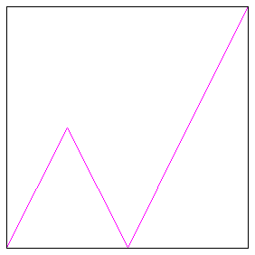

| 7. (a) To find the Trading Time increments, first solve this equation for D. |
| .5D + .5D + .5D + .5D = 1 |
| The solution is D = 2. |
| Then the Trading Time increments are |
| dT1 = .52 = .25, dT2 = .52 = .25, dT3 = .52 = .25, dT4 = .52 = .25, |
| (b) Here are the generators, Price-Clock Time in blue, Price-Trading Time in red. |
|  |
| (c) The graph shows only one generator, in purple to indicate the superposition of red and blue. The reason the Price-Trading Time and Price-Clock TIme graphs coincide is that the original generator is unifractal. Converting to Trading Time changes a multifractal generator to a unifractal generator, so here we see that if the generator already is unifractal, the conversion to Trading Time leaves the generator unchanged. |
Return to Homework 7 Practice.